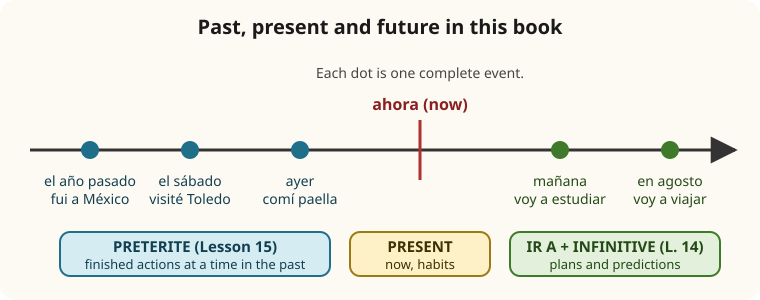

Lesson 15: What Happened: The Preterite¶
El pretérito: lo que pasó
So far you have talked about the present (Lessons 6 to 13) and about plans (Lesson 14). The last big step of this course is the past: what you did yesterday, last weekend, on your holidays. Spanish has several past tenses, and the one you need first is the preterite (el pretérito indefinido or pretérito perfecto simple), the tense of finished actions: I went, we saw, she bought. In this lesson you learn its regular endings, the handful of irregular verbs that everyone uses every day, and the words that place an action in the past. By the end you will be able to tell the story of a trip.
Learning outcomes
By the end of this lesson you will be able to:
- form the preterite of regular -ar, -er and -ir verbs, with their written accents;
- spell the yo form of verbs ending in -car, -gar and -zar correctly;
- use the irregular preterites fui (ser and ir), hice, tuve, estuve and recognise others such as pude, quise, vine, dije;
- place events in the past with ayer, anoche, la semana pasada, hace dos años and similar expressions;
- tell a short story of a holiday, and ask someone about theirs;
- recognise the present perfect (he comido), which Spain uses for today's events.
masculinefeminineplural
15.1 Dialogue: back from the holidays¶
It is the first Monday of September. Diego, who planned his trip in Lesson 14, is back at work in Madrid. Laura asks him about his holiday with his sister Ana.
- Laura: ¡Hola, Diego! ¿Qué tal las vacaciones? — Hi, Diego! How were the holidays?
- Diego: ¡Fenomenal! Lo pasamos genial. — Fantastic! We had a great time.
- Laura: ¿Adónde fuisteis al final? — Where did you go in the end?
- Diego: Primero estuvimos tres días en Madrid. Mi hermana visitó el Museo del Prado y yo la llevé al Retiro. — First we spent three days in Madrid. My sister visited the Prado Museum and I took her to the Retiro park.
- Laura: ¿Y después? — And then?
- Diego: Después fuimos a Sevilla en tren. Hizo muchísimo calor: ¡cuarenta y dos grados! — Then we went to Seville by train. It was terribly hot: forty-two degrees!
- Laura: Ya te lo dije. ¿Comprasteis un sombrero? — I told you so. Did you buy a hat?
- Diego: Sí, compramos dos. Y comimos un gazpacho buenísimo. — Yes, we bought two. And we ate a wonderful gazpacho.
- Laura: ¿Y Granada? ¿Visitasteis la Alhambra? — And Granada? Did you visit the Alhambra?
- Diego: Sí, el último día. Tuvimos que reservar las entradas un mes antes, pero valió la pena. — Yes, on the last day. We had to book the tickets a month ahead, but it was worth it.
- Laura: ¿Y a tu hermana le gustó España? — And did your sister like Spain?
- Diego: Le encantó. Sacó cientos de fotos. Volvió a México el lunes pasado. ¿Y tú? ¿Qué hiciste en agosto? — She loved it. She took hundreds of photos. She went back to Mexico last Monday. And you? What did you do in August?
- Laura: Fui al pueblo de mis abuelos, en Asturias. Descansé, leí mucho y me bañé en el mar todos los días. — I went to my grandparents' village in Asturias. I rested, read a lot and swam in the sea every day.
- Diego: ¡Qué envidia! — I'm so jealous!
Notice:
- Every verb that tells what happened is in the preterite: visitó, compramos, comimos, descansé, leí.
- Regular forms carry a written accent on the last syllable in the yo and él forms: llevé, visitó, sacó, volvió.
- Some very common verbs are irregular and have no accents: fuimos, estuvimos, hizo, tuvimos, dije, hiciste.
- gustar and encantar (Lesson 12) work in the past too: le gustó, le encantó.
15.2 Vocabulary: time in the past, and holidays¶
When did it happen?¶
| Spanish | Sounds like | English |
|---|---|---|
| ayer | [ah-YEHR] | yesterday |
| anteayer | [ahn-teh-ah-YEHR] | the day before yesterday |
| anoche | [ah-NOH-cheh] | last night |
| ayer por la mañana | [ah-YEHR pohr lah mah-NYAH-nah] | yesterday morning |
| el lunes | [ehl LOO-nehs] | on Monday (last Monday, in a past sentence) |
| el fin de semana pasado | [ehl feen deh seh-MAH-nah pah-SAH-doh] | last weekend |
| la semana pasada | [lah seh-MAH-nah pah-SAH-dah] | last week |
| el mes pasado | [ehl mehs pah-SAH-doh] | last month |
| el año pasado | [ehl AH-nyoh pah-SAH-doh] | last year |
| el verano pasado | [ehl beh-RAH-noh pah-SAH-doh] | last summer |
| hace dos días | [AH-seh dohs DEE-ahs] | two days ago |
| hace un año | [AH-seh oon AH-nyoh] | a year ago |
| en 2019 | [ehn dohs meel dyeh-see-NWEH-beh] | in 2019 |
| en agosto | [ehn ah-GOHS-toh] | in August |
| una vez / dos veces | [OO-nah behs / dohs BEH-sehs] | once / twice |
Table 15.1. Time expressions for the past. Pasado agrees with its noun: el mes pasado, la semana pasada. In most of Spain, hace and vez are said with a th sound: [AH-theh], [behth].
Hace means ago
To say how long ago something happened, put hace in front of the length of time: hace tres días (three days ago), hace una hora (an hour ago), hace mucho tiempo (a long time ago). It is the verb hacer (Lesson 10), which never changes in this phrase. To ask: ¿Cuándo fuiste a Perú? — Hace dos años.
What did you do?¶
| Spanish | English |
|---|---|
| viajar | to travel |
| visitar un museo | to visit a museum |
| conocer una ciudad | to get to know a city, to see a city for the first time |
| sacar fotos | to take photos (Latin America also: tomar fotos) |
| tomar el sol | to sunbathe |
| bañarse en el mar | to swim in the sea |
| probar la comida típica | to try the local food |
| alojarse en un hotel | to stay in a hotel |
| alquilar un coche | to hire a car |
| descansar | to rest |
| salir de noche | to go out at night |
| perder el tren | to miss the train |
| pasarlo bien / pasarlo mal | to have a good time / a bad time |
Table 15.2. Holiday activities.
How was it?¶
| Spanish | English |
|---|---|
| ¿Qué tal el viaje? | How was the trip? |
| ¿Qué tal te fue? | How did it go (for you)? |
| Fue genial. / Fue fenomenal. | It was great. / It was fantastic. |
| Fue un desastre. | It was a disaster. |
| Lo pasé muy bien. | I had a very good time. |
| Me encantó. | I loved it. |
| No me gustó nada. | I didn't like it at all. |
| Valió la pena. | It was worth it. |
Table 15.3. Reacting to a past event.
15.3 Grammar: the regular preterite¶
The preterite tells of an action that is complete and finished, usually at a time that is stated or clear: Ayer visité el museo. (Yesterday I visited the museum.) It translates the English simple past (I visited) and, in questions and negatives, did you visit?, I didn't visit.

The endings are added to the stem (the infinitive without -ar, -er, -ir). There are two sets: one for -ar verbs, and one shared by -er and -ir verbs.
| Person | hablar | comer | vivir |
|---|---|---|---|
| yo | hablé | comí | viví |
| tú | hablaste | comiste | viviste |
| él, ella, usted | habló | comió | vivió |
| nosotros, nosotras | hablamos | comimos | vivimos |
| vosotros, vosotras | hablasteis | comisteis | vivisteis |
| ellos, ellas, ustedes | hablaron | comieron | vivieron |
Table 15.4. The regular preterite. Switch on Practice and write the endings.
Four things to notice:
- The accents matter. hablo [AH-bloh] is "I speak"; habló [ah-BLOH] is "he spoke". Only the stress and the accent tell them apart. Say the preterite forms with a strong stress on the last syllable: hablé, habló, comí, comió.
- The nosotros forms of -ar and -ir verbs are the same as in the present. hablamos means "we speak" or "we spoke"; vivimos means "we live" or "we lived". The context, usually a time word, decides: Ayer hablamos con Ana. (Yesterday we spoke to Ana.) For -er verbs they differ: comemos (we eat), comimos (we ate).
- Stem-changing -ar and -er verbs do not change in the preterite. The "boot" of Lesson 10 belongs to the present only: pienso but pensé; vuelvo but volví; cuesta but costó.
- Reflexive verbs keep their pronouns: me levanté, te duchaste, se acostó, nos bañamos.
Spelling changes in the yo form¶
Lesson 1 showed that Spanish changes spelling to keep a sound the same before e and i. The yo ending -é causes three such changes:
| Infinitive ends in | Change in yo | Examples | But él form |
|---|---|---|---|
| -car | c → qu | sacar → saqué, buscar → busqué, tocar → toqué | sacó |
| -gar | g → gu | llegar → llegué, pagar → pagué, jugar → jugué | llegó |
| -zar | z → c | empezar → empecé, cruzar → crucé, almorzar → almorcé | empezó |
Table 15.5. Spelling changes. The sound does not change; only the letters do.
-er and -ir verbs with a vowel before the ending¶
When the stem of an -er or -ir verb ends in a vowel, the i of the él and ellos endings becomes y, because Spanish does not allow an unstressed i between two vowels:
- leer: leí, leíste, leyó, leímos, leísteis, leyeron
- creer (to believe): creyó, creyeron
- oír (to hear): oyó, oyeron
-ir verbs that change their stem¶
The -ir verbs with a stem change in the present (Lessons 10 and 11) also change in the preterite, but only in the él and ellos forms, and only by one vowel: e → i and o → u.
| Infinitive | yo | él, ella, usted | ellos, ellas, ustedes |
|---|---|---|---|
| dormir | dormí | durmió | durmieron |
| pedir | pedí | pidió | pidieron |
| preferir | preferí | prefirió | prefirieron |
| vestirse | me vestí | se vistió | se vistieron |
Table 15.6. -ir verbs with a change in the third person. At this level it is enough to recognise them.
Worked example: a regular day in the past
Put this present-tense routine into the past, as if it happened yesterday: Me levanto a las siete, desayuno, llego a la oficina a las nueve y trabajo hasta las seis.
- me levanto → me levanté (regular -ar, yo: -é)
- desayuno → desayuné
- llego → llegué (-gar: add u to keep the hard g)
- trabajo → trabajé
Result: Ayer me levanté a las siete, desayuné, llegué a la oficina a las nueve y trabajé hasta las seis.
15.4 Grammar: irregular preterites¶
A small group of very common verbs is irregular in the preterite. The good news: most of them share one set of endings, and none of them has a written accent.
Ser and ir: the same forms¶
The preterites of ser (to be) and ir (to go) are identical. The sentence always makes clear which is meant: fui a Sevilla (I went to Seville) has a destination; fue genial (it was great) has a description.
| Person | ser / ir |
|---|---|
| yo | fui |
| tú | fuiste |
| él, ella, usted | fue |
| nosotros, nosotras | fuimos |
| vosotros, vosotras | fuisteis |
| ellos, ellas, ustedes | fueron |
Table 15.7. The preterite of ser and ir.
- El sábado fuimos a la playa. — On Saturday we went to the beach. (ir)
- La fiesta fue en casa de Pablo. — The party was at Pablo's house. (ser)
- ¿Adónde fuiste ayer? — Where did you go yesterday? (ir)
- El viaje fue muy largo. — The journey was very long. (ser)
Hacer, tener, estar and their family¶
These verbs have a new stem and a special set of endings: -e, -iste, -o, -imos, -isteis, -ieron. Note that the yo form ends in unstressed -e and the él form in unstressed -o.
| Person | hacer | tener | estar |
|---|---|---|---|
| yo | hice | tuve | estuve |
| tú | hiciste | tuviste | estuviste |
| él, ella, usted | hizo | tuvo | estuvo |
| nosotros, nosotras | hicimos | tuvimos | estuvimos |
| vosotros, vosotras | hicisteis | tuvisteis | estuvisteis |
| ellos, ellas, ustedes | hicieron | tuvieron | estuvieron |
Table 15.8. Three key irregular preterites. Hizo is spelt with z to keep the sound of hice.
The same pattern works for other verbs from this course:
| Infinitive | Stem | yo | él, ella, usted |
|---|---|---|---|
| poder | pud- | pude | pudo |
| poner | pus- | puse | puso |
| querer | quis- | quise | quiso |
| venir | vin- | vine | vino |
| saber | sup- | supe | supo |
| decir | dij- | dije | dijo (ellos: dijeron) |
Table 15.9. More irregular preterites with the same endings. After j, -ieron becomes -eron: dijeron.
Ver and dar¶
Two short verbs use the regular -er/-ir endings, but without accents because the forms are one syllable: ver: vi, viste, vio, vimos, visteis, vieron. dar (to give), although it is an -ar verb, takes the same endings: di, diste, dio, dimos, disteis, dieron.
- Anoche vi una película muy buena. — Last night I saw a very good film.
- Mis padres me dieron un regalo. — My parents gave me a present.
Hay in the past¶
The preterite of hay is hubo, "there was, there were", for an event: Hubo un concierto en la plaza. (There was a concert in the square.) For the weather, use hacer: hizo calor, hizo buen tiempo; and llovió, nevó for rain and snow.
Common mistake: accents on irregular forms
Regular preterites have accents (hablé, comió); irregular ones do not. Write hice, tuvo, fui, fue, vio, dio, never hicé, tuvó, fuí. And do not confuse fue (he went, it was) with fui (I went, I was).
For recognition: the present perfect, and the imperfect¶
You will hear two more past tenses, which later courses teach in full.
The present perfect (pretérito perfecto compuesto) is formed with haber + a participle in -ado or -ido: he hablado (I have spoken), has comido (you have eaten), ha vivido, hemos visto, habéis ido, han hecho. In Spain it is the normal tense for anything that happened today or in a period that has not ended: Esta mañana he desayunado café. (This morning I had coffee.) In most of Latin America, the preterite is used instead: Esta mañana desayuné café. Both are correct where they are used. If you use the preterite everywhere, you will always be understood.
The imperfect (pretérito imperfecto) describes how things were or used to be: De niño vivía en Lima. (As a child I lived in Lima.) Hacía sol y la playa era preciosa. (It was sunny and the beach was beautiful.) The difference between the preterite, for completed events, and the imperfect, for background and habits, is the main topic of the next level.
15.5 Practice¶
| Present | Preterite | English |
|---|---|---|
| trabajo | trabajé | I worked |
| come | comió | she ate |
| vivimos | vivimos | we lived |
| salen | salieron | they went out |
| vas | fuiste | you went |
| hacemos | hicimos | we did, we made |
| tiene | tuvo | he had |
| estoy | estuve | I was |
| pago | pagué | I paid |
| ven | vieron | they saw |
Table 15.10. From present to preterite. Switch on Practice to test yourself.
Questions and answers about the past¶
- ¿Qué hiciste el fin de semana pasado? — Fui al cine con unos amigos. — What did you do last weekend? — I went to the cinema with some friends.
- ¿Dónde estuviste ayer? — Estuve en casa todo el día. — Where were you yesterday? — I was at home all day.
- ¿A qué hora te acostaste anoche? — Me acosté a las doce. — What time did you go to bed last night? — I went to bed at twelve.
- ¿Cuándo empezaste a estudiar español? — Empecé hace seis meses. — When did you start learning Spanish? — I started six months ago.
- ¿Te gustó la película? — Sí, me encantó. — Did you like the film? — Yes, I loved it.
- ¿Qué tal el viaje? — Fue un desastre: perdimos el avión. — How was the trip? — It was a disaster: we missed the plane.
Telling a story: linking words¶
A story needs words that show the order of events. You know some from Lesson 11:
| Spanish | English |
|---|---|
| primero | first |
| luego, después | then, afterwards |
| más tarde | later |
| al día siguiente | the next day |
| de repente | suddenly |
| al final, por último | in the end, finally |
Table 15.11. Linking words for a story.
Worked example: a holiday story
Read this short story and find the verbs. Which are regular, and which irregular?
El verano pasado fui a Perú con mi mejor amiga. Primero estuvimos dos días en Lima. Comimos ceviche y visitamos el centro histórico. Luego tomamos un avión a Cuzco. Al día siguiente subimos a Machu Picchu. Hizo frío por la mañana, pero después salió el sol. Sacamos muchas fotos. Al final volvimos a casa muy cansadas, pero muy contentas. ¡Fue un viaje inolvidable!
Last summer I went to Peru with my best friend. First we spent two days in Lima. We ate ceviche and visited the historic centre. Then we took a plane to Cuzco. The next day we went up to Machu Picchu. It was cold in the morning, but then the sun came out. We took lots of photos. In the end we came home very tired but very happy. It was an unforgettable trip!
Irregular: fui, estuvimos, hizo, fue. Regular: comimos, visitamos, tomamos, subimos, salió, sacamos, volvimos. Note cansadas and contentas: feminine plural, because the speaker and her friend are both women.
Say it
Tell a partner, or record yourself, what you did last weekend, in four or five sentences. Use at least one irregular verb. For example:
El sábado por la mañana fui al mercado. Por la tarde hice deporte. El domingo comí con mi familia y por la noche vi una película.
15.6 Culture: travel memories from Spain and Latin America¶
Places people talk about. If you travel in the Spanish-speaking world, these are some of the places you will hear about, and perhaps tell stories about afterwards. In Spain: the Alhambra, the palace and fortress of Granada built under Muslim rule; the Prado Museum in Madrid; the Sagrada Familia, Antoni Gaudí's basilica in Barcelona. In Latin America: Machu Picchu, the Inca city in the Andes of Peru; the pyramids of Teotihuacán near Mexico City and the Maya city of Chichén Itzá in Yucatán; the glaciers and mountains of Patagonia, shared by Argentina and Chile.
The Camino de Santiago. Every year many thousands of people walk, or cycle, the Camino de Santiago, the pilgrims' routes across northern Spain to the cathedral of Santiago de Compostela, in Galicia. Walkers carry a credencial, a pilgrim's passport stamped at each stop, and greet each other with ¡Buen camino! Ask anyone who has done it, ¿Cuándo hiciste el Camino?, and you will hear a story in the preterite.
Lo pasé bien or la pasé bien? In Spain, "I had a good time" is lo pasé bien. In Mexico and much of Latin America you will often hear la pasé bien, with la. Both mean the same.
Today in Spain, yesterday everywhere. As you saw in 15.4, a Spaniard asks ¿Qué has hecho hoy? (What have you done today?), while a Mexican or an Argentine asks ¿Qué hiciste hoy? For yesterday and before, everyone uses the preterite: ¿Qué hiciste ayer?
Souvenirs and gifts. A souvenir is un recuerdo, the same word as "a memory". People returning from a trip often bring small gifts for family and colleagues, and in Spain an office worker back from holiday may bring a box of local sweets to share. Te he traído un recuerdo (Spain) or Te traje un recuerdo (Latin America): "I've brought you a souvenir."
15.7 Summary¶
Summary
- The preterite tells of finished actions in the past: Ayer visité el museo.
- Regular endings. -ar: -é, -aste, -ó, -amos, -asteis, -aron. -er and -ir: -í, -iste, -ió, -imos, -isteis, -ieron. The yo and él forms are stressed on the last syllable and carry an accent.
- Spelling in the yo form: saqué, llegué, empecé. i becomes y: leyó, oyeron. -ir stem changes in the third person: durmió, pidió.
- Irregular, without accents: ser and ir fui, fuiste, fue, fuimos, fuisteis, fueron; hice, tuve, estuve, pude, puse, quise, vine, supe, dije with the endings -e, -iste, -o, -imos, -isteis, -ieron; vi, vio; di, dio; hubo.
- Time words: ayer, anoche, el año pasado, la semana pasada, hace dos días.
- Spain uses the present perfect for today (he comido); Latin America mostly uses the preterite (comí).
15.8 Exercises¶
Exercise 1
Give the yo form of the preterite of comprar.
Answer
compré. compré, with an accent on the last syllable.
Exercise 2
Complete: Mi hermana ___ (vivir) en Chile dos años.
Answer
vivió. Mi hermana vivió en Chile dos años.
Exercise 3
Complete: Ayer yo ___ (llegar) tarde a clase.
Answer
llegué. Ayer llegué tarde a clase. The u keeps the hard g before e.
Exercise 4
Complete: El año pasado nosotros ___ (ir) a Colombia.
Answer
fuimos. El año pasado fuimos a Colombia.
Exercise 5
Complete: ¿Qué ___ (hacer) tú el domingo?
Answer
hiciste. ¿Qué hiciste el domingo?
Exercise 6
Complete: Mis padres ___ (estar) en Roma la semana pasada.
Answer
estuvieron. Mis padres estuvieron en Roma la semana pasada.
Exercise 7
Translate: "Two years ago".
Answer
Hace dos años. hace dos años
Exercise 8
Is fue from ser or from ir in each sentence? (a) El concierto fue fantástico. (b) Pedro fue al médico.
Answer
(a) ser: it describes the concert ("was"). (b) ir: it has a destination, al médico ("went").
Exercise 9
Correct the mistakes: Anoche yo hací la cena y después ví la tele.
Answer
Anoche yo hice la cena y después vi la tele. hacer is irregular (hice), and vi, a single syllable, has no accent.
Exercise 10
Put into the past, starting with Ayer: Me levanto tarde, leo el periódico y salgo con mis amigos.
Answer
Ayer me levanté tarde, leí el periódico y salí con mis amigos.
15.9 Quiz¶
Quiz: the preterite
Exercise 11
Ayer Carmen ___ un libro muy interesante.
- leo
- leyó
- leió
- lee
Answer
leyó
Between two vowels the i of -ió becomes y.
Exercise 12
Which sentence means "I went to the market"?
- Voy al mercado.
- Fui al mercado.
- Fue al mercado.
- Iba al mercado.
Answer
Fui al mercado.
fui is the yo form of ir in the preterite; fue is él or ella.
Exercise 13
El sábado pasado nosotros ___ una fiesta en casa.
Hint: hacer
Answer
hicimos
hacer has the stem hic- in the preterite; nosotros hicimos.
Exercise 14
Yo ___ el autobús a las ocho y ___ al trabajo a las nueve.
Hint: tomar, llegar
Answer
tomé / cogí · llegué
tomé is regular; llegué adds u to keep the hard g.
Exercise 15
Say "Last night I saw a film" in Spanish.
Answer
Anoche vi una película / Anoche yo vi una película
Exercise 16
Match each infinitive to its yo preterite.
| A | B |
|---|---|
| tener | pude |
| estar | vine |
| poder | dije |
| venir | tuve |
| decir | estuve |
Answer
tener — tuve; estar — estuve; poder — pude; venir — vine; decir — dije
Exercise 17
Tap the wrong word.
El año pasado mis amigos fueron a México y tuvieron un viaje fantástico, pero mi hermano no fui.
Answer
Wrong word: fui.
Corrected: El año pasado mis amigos fueron a México y tuvieron un viaje fantástico, pero mi hermano no fue.
mi hermano is él, so the form is fue.
Exercise 18
Put the words in order.
Words: Hace / años / Aires. / en / Buenos / dos / estuve
Answer
Hace dos años estuve en Buenos Aires.
Exercise 19
Where did the speaker go last summer?
Read this aloud or have someone read it to you:
El verano pasado fui a Galicia con mis padres. Hizo buen tiempo y comimos mucho marisco.
- Galicia
- Granada
- Guatemala
- Madrid
Answer
Galicia
Transcript: “El verano pasado fui a Galicia con mis padres. Hizo buen tiempo y comimos mucho marisco.”
fui a Galicia = I went to Galicia.
Exercise 20
Write what you hear.
Dictation. Have someone read the sentence aloud, then write it down.
Ayer comí con mis abuelos y después fuimos al parque.
Answer
Ayer comí con mis abuelos y después fuimos al parque.
Exercise 21
Say it aloud, stressing the last syllable of each verb.
Hablé con Ana, comí paella y volví a casa.
Answer
Say: Hablé con Ana, comí paella y volví a casa.